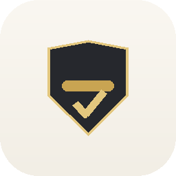

Security & Access
Gate Desk
Visitor, vehicle, material and workforce gate control built for the security guard — on a phone, a tablet or a laptop. A clean back office for the gate manager.
For the guard
- Gate Desk home — live inside / expected / exited counters, four task tiles, the inside-now list with one-tap Check-Out. Every page has a Home button, so it works on a phone where Odoo's menu is hidden.
- Walk-In Entry — Visitor, Vehicle or Material in one form; repeat visitors auto-fill from their mobile number; photo capture from the device camera is required for people and vehicles.
- Verify Invitation — type the 6-digit code on a keypad, scan the QR with the camera (works offline) or a handheld scanner; a match card shows who the pass belongs to before the photo confirms the entry.
- Worker Attendance — Inside / On break / Outside lists, per-worker Check-In, Break, Break over and Check-Out, and a common break for the whole floor with one press.
- Schedule Visit — create an invitation pass (entry code + QR + validity) and share it by e-mail, PDF, link and — on Odoo Enterprise with the WhatsApp app — WhatsApp.
For the manager
- Entries kanban / list / form with chatter, audit times, overdue ribbon and a duplicate-vehicle guard.
- Workforce profiles (spreadsheet import mapping included), shift logs with break minutes, break logs.
- Auto-exit of expired entries every 30 minutes, multi-company record rules, two roles: Security Guard and Gate Manager.
- Public digital pass page and printable PDF pass with directions.
Compatibility
Odoo Community and Odoo Enterprise. Depends only on base, mail and web. On Enterprise, installing the WhatsApp app enables the WhatsApp send option automatically — no extra module.
Setup: Settings → Users → give the guard the Gate Management / Security Guard access and the manager Gate Management / Gate Manager. Use HTTPS so the browser allows camera access at the gate.